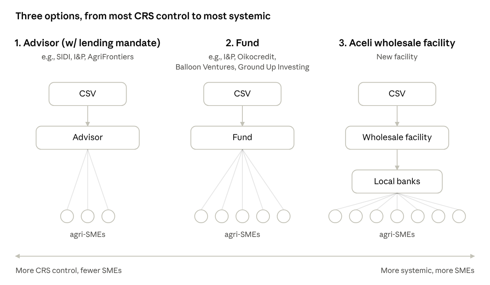

October 20, 2026 · Songbae · Earlier RFP version (Oct 12)
On October 6, Julie, Shaun, Jim and I summarized three options for financing Forest Flavors agri-SMEs and how CRS TA fits around whichever lender we use, and agreed to run a two-stage RFP to choose among them. After a later discussion between Orin and me, we replaced the RFP with prioritized outreach to four to five organizations for partnership development, a middle path between working with one or two partners and going broad. Under each option below, potential partners are grouped into three tiers; Tier 1 is where we start.
The options differ in who ends up lending to the SME: an advisor CRS hires, a fund, or local banks through Aceli’s facility.

Aceli’s new wholesale facility is structurally a fund, but we list it separately because banks, not the fund, hold the SME relationship. Aceli’s new wholesale facility is separate from Aceli’s existing grant-funded model, which works with partner lenders. Direct lending by CRS (the Isidro model) and a reserve-only approach are not among the three options.
| Option 1: Advisor | Option 2: Fund | Option 3: Aceli | Total | |
|---|---|---|---|---|
| Tier 1 | I&P, SIDI, Miarakap | Balloon Ventures | Aceli Africa | 5 |
| Tier 2 | Root Capital, Pearl, Agri Frontier | One Acre Ventures, Ground Up Investing, Kampani (learning calls) | — | 6 |
| Tier 3 | GIF | CFC / ACT Fund | — | 2 |
| Total | 7 | 5 | 1 | 13 |
CRS hires an organization to work with agri-SMEs on its behalf. Grant funding pays for the advisor’s services: sourcing pipeline, providing TA, and matching SMEs with funds and banks. CSV can also give the advisor capital to lend directly under a mandate. The advisor then originates and services loans to SMEs that meet criteria agreed with CRS. CRS has the most say over which SMEs are reached, but reaches fewer of them, and the advisor’s costs come out of grant funding.
| Partner | Countries | Why |
|---|---|---|
| I&P | Uganda, Madagascar | Pan-African investor that works through a network of local fund managers, including Miarakap. It has an advisory unit, and its own funds could finance SMEs it advises. Leads FASA. One relationship could reach several countries, though I&P would add its own fees. Also fits Option 2. |
| SIDI | Uganda, Tanzania, Madagascar | Global, ag-focused solidarity investor with Catholic roots. Local presence in a few countries; combines TA with lending. |
| Miarakap | Madagascar | Previous CRS partner in Madagascar. Local fund manager sponsored by I&P, with advisory services and a newly launched $50mm climate-focused fund. |
| Partner | Countries | Why |
|---|---|---|
| Root Capital | Uganda, Tanzania, Madagascar | The best-known US-based lender to agricultural cooperatives and SMEs in the Global South. Worked with CRS on the first loan in Madagascar, to Lafaza. |
| Pearl Capital Partners | Uganda | Uganda-based agriculture fund manager. Partner with TechnoServe in Vines in Uganda until USDA cancelled the contract. |
| Agri Frontier | Uganda, Tanzania | Existing collaborative relationship. Offers advisory services, ran an accelerator, and is setting up a new fund with FASA support. |
| Partner | Countries | Why |
|---|---|---|
| GIF | Not country-specific | Global, sector-agnostic. CRS could work through its advisory side or invest in its fund. Also fits Option 2. |
CSV invests in a fund run by a fund manager, alongside the fund’s other investors. The fund manager decides which SMEs to finance, within the fund’s investment policy. CRS influences what the fund does through the terms of its investment, and possibly a seat on an advisory or investment committee, but not loan by loan. CRS can still refer its SMEs to the fund and provide ag TA alongside. Compared with Option 1, CRS reaches more SMEs and gets its capital back net of the manager’s fees, but has less say over which SMEs are reached.
| Partner | Countries | Why |
|---|---|---|
| Balloon Ventures | Uganda | Sector-agnostic lender to small businesses. Builds a 12-month cash-flow history for every borrower. |
| Partner | Countries | Why |
|---|---|---|
| One Acre Ventures | Uganda | Joint venture between One Acre Fund and IDH. The best example of an NGO supplying pipeline to a fund: about half its pipeline comes from One Acre Fund’s network. |
| Ground Up Investing | Uganda | Corus International’s impact investing arm. An example of an NGO setting up a global fund; historically a company builder, its new fund will be a lender. |
| Kampani | Global | Global ag impact investor providing unsecured equity or subordinated debt to producer organisations and agri-SMEs. Its NGO shareholders provide pipeline. |
| Partner | Countries | Why |
|---|---|---|
| CFC / ACT Fund | Madagascar, Uganda (past CFC loans) | Private credit fund set up by the Common Fund for Commodities, lending to agri-commodity SMEs. Raising a new ag fund ($40mm first close). |
I&P and GIF also fit this option; see Option 1.
CSV invests in Aceli’s new wholesale facility, which lends low-cost, long-term capital to local banks. The banks lend to agri-SMEs and make the credit decisions. The facility is separate from Aceli’s existing grant-funded incentive model. This option reaches the most SMEs, and CRS gets its capital back plus 2–4% a year, net of Aceli’s fee. The banks, not CRS, choose which SMEs to finance. However, Aceli is willing to work proactively to channel capital to SMEs CRS works with, for example by making warm introductions to its lending partners. CRS can also offer TA to those SMEs alongside the facility.
| Partner | Countries | Why |
|---|---|---|
| Aceli Africa | Uganda | Well-established incentive model for banks; now setting up a new fund in Uganda to provide low-cost, long-term capital to banks. Could introduce CRS to its partner banks for TA. |
For diagrams comparing the options on control, cost and admin burden, see the October 12 version.
Next step: reach out to the Tier 1 partners.